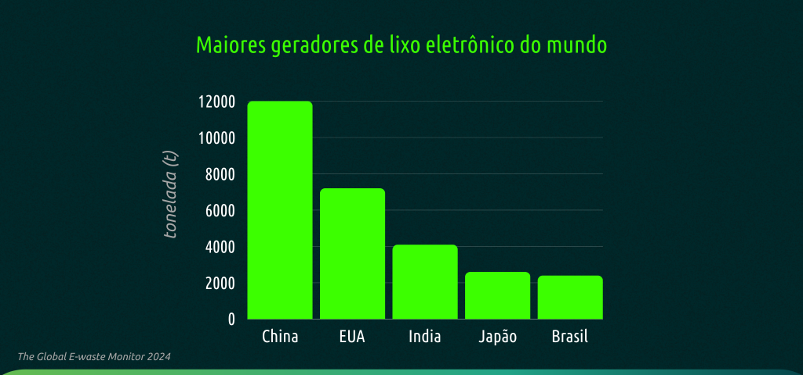

Processo de Reciclagem de Resíduos Eletroeletrônicos
O processo de reciclagem de resíduos eletroeletrônicos envolve várias etapas complexas para garantir a recuperação eficiente de materiais valiosos e a minimização dos impactos ambientais negativos

1. Coleta e Transporte: Os resíduos eletrônicos são coletados de consumidores, empresas e pontos de descarte. É crucial que o transporte seja realizado de maneira segura para evitar danos aos materiais e vazamentos de substâncias tóxicas.
2. Triagem: Na instalação de reciclagem, os dispositivos eletrônicos são triados para separar aqueles que podem ser reciclados dos que precisam de tratamento especial devido a substâncias perigosas.
3. Desmontagem: Os dispositivos são desmontados manualmente ou por máquinas especializadas para separar os componentes e materiais, como placas de circuito, baterias, metais, plásticos e vidro.
4. Trituração: Os componentes são triturados em pedaços menores para facilitar o processamento subsequente.
5. Separação: Utilizando técnicas como separação magnética, peneiramento, flotação e processos químicos, os materiais são separados uns dos outros. Por exemplo, metais são separados de plásticos e vidro.
6. Processamento: Os materiais separados são processados para purificar os metais preciosos e outros materiais valiosos. Isso pode incluir fundição para metais e granulação para plásticos.
7. Refino: Os materiais reciclados são refinados para atender aos padrões de qualidade necessários para serem usados na fabricação de novos produtos eletrônicos ou em outras indústrias.
Processo mais detalhados em: Processo de Reciclagem
Estatísticas e Dados Relevantes
Produção Global de Resíduos Eletroeletrônicos: Segundo a Global E-waste Statistics Partnership, em 2019, o mundo produziu aproximadamente 53,6 milhões de toneladas métricas de resíduos eletrônicos. Este número é projetado para aumentar para 74,7 milhões de toneladas métricas até 2030.
Taxas de Reciclagem: A taxa global de reciclagem de resíduos eletrônicos ainda é relativamente baixa. Aproximadamente apenas 17,4% do e-lixo gerado globalmente em 2019 foi coletado e reciclado adequadamente. Muitos resíduos eletrônicos são descartados de maneira inadequada, contribuindo para problemas ambientais significativos.
Impacto Econômico: Estima-se que o valor dos metais preciosos recuperados de resíduos eletrônicos seja significativo, estimulando o interesse econômico na reciclagem eficiente desses materiais.